Trip Blog
Randy at breakfast

We have decided this dish is an excellent meal to power us on our bike ride. (Protein, Fat, and carbohydrates). Tamales are another food we have discovered is an excellent biking food.
Update: New Pictures and a Podcast (Audio)
- Our location: We're in Parral, about 200 miles south of Chihuahua, having exited the southeast end of the Copper Canyon region. Nancy did up a wonderful new map of our route (below) so you can see our route.
- New pictures: There are a lot of new pictures on the photos page.
- Podcast: We have started an experimental podcast (audio listen) for you. Click the Podcast button on the top of the page.

Zacatecas band winding through the streets
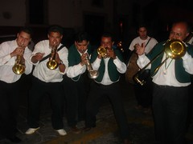
In Zacatecas there is a tradition (I think especially on Saturday nights) of bands winding their way through the streets - kind of a roving party. People follow them around and drink mezcal. We heard one on Saturday night and followed it all over the city - it seemed like we went though every little alley. They were amazing entertainers. They always had something new going. The funniest thing was when we were going through a narrow alley and a dog was barking at us from a balcony above. The whole party stopped, and the band started a piece that involved barking. Every so often they'd stop and we (the whole crowd) would bark back at the dog!
Zacatecas from above - and finding directions
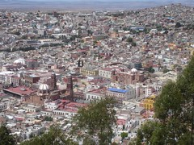
Here's a view of Zacatecas from above. If you click on it you'll get a bigger version and you can see the entire city center. It's an amazing place, with (too many) places to go and things to see. All beautiful, all the old, colonial city.
One of the issues any time we're trying to find out way around is that (1) we don't understand everything people say and (2) they don't necessarily give good directions. For example, if we ask for directions to some site, they may say "straight, straight, straight, just straight". But it turns out that you come to a "T". What do you do then? (Ask again, over and over, of course).
And sometimes there are no signs on a business. In one little town we were looking for an internet "cafe". It turned out there was one, but we had to find our way to the "yellow house". There was no sign at all on said "yellow house", but we did find it and it did in fact have several computers with very slow internet access. When everybody in a town knows where everything is, who needs a sign?
In the little villages along our way a lot of times there's only one little store. It has no sign, but sometimes it will have one little colorful "Fritos" poster outside or something. And usually the door is open, but we have to use these clues to find our way (and ask).
Parral to Durango and then Zacatecas

About 56 kilometers (35 miles) south Parral as we rode into the town of Las Nieves, the wind blew sheets of dust across the town, the roads and us. It was so impressive to see the wind blowing sideways full of the dust and particles of the arid landscape. We bought a few things to eat from the local Pemex gas station and continued on our way to find Poncho Villa’s Villa in Canutillo. The villa was a run-down complex with a handful of building with large photos and a bit of history about this Mexican who both was a local hero, a famous general of the Mexican revolution, and renegade (from the perspective of the U.S.). After the visit to the museum we decided to find a hotel because we both were sick with a cold and did not have the energy to continue. We found a clean economical room next to the bus stop which we laid low for two days recovering from our ailments.
We headed out two days later feeling somewhat better. The winds where more gentle and the landscape was the same.

(You may want to click the "read more" below to continue - this is a long one.)
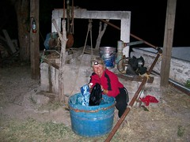
We stopped in Rodeo for the day and spent the night, friendly enough people but Durango and Zacatecas called us. We continued on fighting the headwind until I just had enough. We stopped in the afternoon at bus stop to rest and try to get out of the wind. I was exhausted and the traffic was picking up either because we were getting close to Durango, a large urban city, or a lot of people were starting their two week holiday which falls during holy week. Or maybe both. Anyway, we decided to take a bus the next 40 kilometers to Durango and then two days later to Zacatecas for Semana Santa (holy week). The traffic in Durango was heavy and vehicles emitted more pollution then we have seen so far Mexico. We rode aggressively to the main plaza, found a hotel and stayed for two nights. I think we were the only guests in the hotel and had a bit of an abandoned feeling. It was clean and affordable. If you stay there always ask for a balcony view because it is the only reason to stay at this very old hotel.
We hopped on to a bus to Zacatecas – it took 5 hours and they showed 3 movies, two of them in English with Spanish subtitles. The buses in Mexico are first class. Because the people of this part of Mexico do not have a lot of money to afford things like cars and internet in their homes, the buses and internet cafes in Mexico are first class and abundantly available.
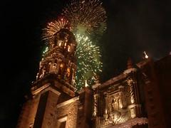
Oh, did I mention we also took a week of classes to learn Spanish at the Fenix Language Institute. Randy was in an advanced class with 3 students and Nancy was put in a special education class for the slow learners, or should I say a basic class, Level 1 Spanish. We both learned a lot and enjoyed attending this structured institute of learning.
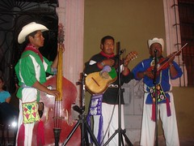
The week in Zacatecas has been a true immersion experience: full of learning Spanish and Mexican family tradition, exploring a phenomenal colonial city, and enjoying a full week of cultural, traditional and religious events.
Where we are: Early April 2007

There are new pictures on the photos page...
Migration and Mexicans
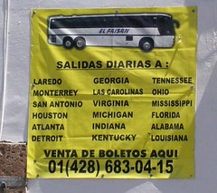
I think everybody knows that immigration by Mexicans is a big issue in the US. But you'd be amazed at the view from our end. The entire migration issue is having a profound impact on all of Mexico and the entire Mexican people. We have been to many, many towns whose entire working population is working in the US. We went to a big festival in the town of Jerez the other day - everyone assured us that 99% of the populatin of Jerez is working in the US. That's why the festival is such a big deal - many of the "paisanos", as US-workers are known, return for the fiesta. It's the one cultural connection with the old home town.
Everywhere we go, we see signs for the bus to the US. There are amazingly good prices. From Chihuahua you can get to Denver for US $69. From where we are today in northern Guanajuato, you can get to Dallas for US $40. At least that's what the sign claims.
It's not hard to figure out why you'd work in the US for $100/day instead of working here for (maybe) $10/day. But it is hard to figure out what the cultural results are after a few more decades of this.
I don't think we have talked with a single man of working age who has not made at least one working trip to the US. That's how many people there are working "on the other side", as they say here.
Mexican Climate and Temperatures
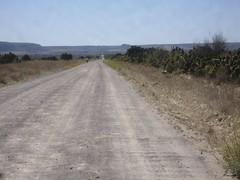
Some of you have asked if it's getting really, really hot down here (yet). Well, the weather is surprisingly moderate so far, mostly because we're at a high elevation (7000-8000 feet, 2100-2500 meters above sea level). The morning of April 11 we woke up at our campsite to ice crystals on our tent - the temperature was 32 F (0 C). But when we left at 9:30 or so, we didn't have our coats on, and by mid-afternoon it was quite sunny and uncomfortably hot (not intolerable, but pretty stinking hot). Most days it hasn't been near that cold. We're worried about what will happen when we descent to the east or west coast, and about the lowlands of the Yucatan. But I guess we can adapt... or flee... if we get into something we just can't handle.
Prices and Money
I always find it interesting what people pay in other countries, so I'll give you a report on what we're doing financially right now in northern Mexico.
The current exchange rate is hovering right around 11 pesos for a dollar, so it's easy for us to figure out how much we're spending by just knocking a digit off the price or dividing by 10. We're not really working very hard at saving money, but it's pretty inexpensive nonetheless.
Approximate costs in US Dollars:
Hotel: $15-$25 (all have had hot water. Some very nice, others grungier)
Coke in restaurant: $.70-$1.00
Beer: $1.00-$1.50/bottle
Simple Dinner, per person: $4.00
Taco or burrito: $.35
5-hour bus ride: $19
Entrance to bullfight: $20
Gallon of purified water (in plastic bottle): $.90
5 gallons of purified water (need returnable bottle): $1.30-$2.00
Public Restroom: $.25 (includes toilet paper)
Museums: $1.00-$2.00
Doctor consultation at pharmacy: $1.50
1 Kilo (2.2 pounds) of corn tortillas: $.80
Nice torta sandwich: $1.00-$2.00
Spanish Language School: $20/day/person ($100/week)
School Homestay, with 3 meals/day: $16/day/person
April 15 - Tax Time
Hi there all you folks working on your taxes at home! We know that it's tax weekend and wish you well. Some of you asked how we handle the tax event while we're on the road... Well we just do it electronically with Turbotax like we've done for years. We filed in February and got the refund in early March. Not to rub it in or anything.
But that brings to mind a story from the Oregon coast last fall. As you can imagine, not everybody we meet understands what we're up to or why - or can relate to it. We were talking to one fellow who was just flabbergasted at our trip and the informality and unplanned-ness of it. He said "so do you sleep under bridges?"... We said, "well, we have". He was horrified. But his next question was the most memorable indication of his disapproval: "But your taxes - how do you pay your taxes?". We explained that with little income you have little taxes. But we remain amazed that he was more taken with our disconnection from the tax system than with anything else about the trip.
We all make a choice in life. Stay within the lines or venture outside the box. He did not understand there are amazing things to experience outside the normal perimeters. We love to explore the life outside this box. And all you folks who are joining us, are also enjoying life outside this box. And for this we thank you for sharing life our trip.
We all have to pay taxes, we just do it online. Computers sure have changed our lives. Has the world become smaller or are we just more connected. What do you think?
Folkloric dancers in Zacatecas - Video
Countryside and weather changing - Nearing Mexico City

We're in Tula today and visited the ruins of the Toltec capital here (from about 800-1100 A.D.)
We've come quite some distance from Zacatecas - down through a pretty stark countryside and over a big mountain into the Bajio, another major silver producing area and the birthplace of the Mexican War for Independence back in 1811. We worked our way through the cities - a day for riding, a day or two for visiting - Guanajuato, Dolores Hidalgo, San Miguel de Allende, Queretaro. Then we rode down toward the famous ruins of Tula and Teotihuacan near the Valley of Mexico. We're almost in the middle of Mexico now!
As you can see by the picture, we've been riding through some pretty agricultural areas and seeing some mountains - both quite a treat. And we had our first rain the other day - a decent thunderstorm. Tonight in Tula it really poured, with violent thunder and lightning. After 2 1/2 months never even thinking about rain, we're going to have to get re-oriented. And we're mighty happy to be in a hotel tonight! I think we would have been washed away.
Riding to Guanajuato

It was a wonderful road with all the things we love. It wound its way up through a forested canyon on a good dirt road. There was so little traffic that we could let our minds wander or put on our head phones and rock to music as we rode.

Camping on the way to Guanajuato
Let me stray from the story for a second: We have noticed something very strange about the dogs here in Mexico. The local dogs know we are strangers and in the middle of the night they come up to the tent and growl or bark at us for a long time. One dog chewed one of the straps on our tent. We figured out that if we yell at them or go out and pretend to throw something at them, they go away. When we are riding and they chase us we can usually yell at them and they stop. If not, I use water bottle to squirt water at them. They are so dumbfounded they stop and investigate the water. Really dumbfounded. Now back to my original story.
In the morning the old grandfather came to our campsite with his 3 year old grandson, sat on a stump in the field we were camping and watched us as we finished packing up. He was just a curious old man and wanted to come see the stranger how are just crazy enough to ride their bikes up this mountain canyon. As we left we all shook hands and wished each other good luck.

Randy riding above Guanajuato
Questions most frequently asked are: Where are you going? Adonde Va? Which we usually answer the name of the place we will stop for the night. From where are you coming from? De Donde es? We can not figure out if they mean today or the start of our trip, so we say where we started from that morning. This usually impresses them. How many days have you been? Currently we say 8 months. How far do you ride in a day. 50 to 80 kilometers. Why don’t you go by car, it is easier. Where do you stay at night? Do you like Mexico? Do you like Bush? How long is your trip? When we answer two more years. At that point they smile and call us crazy or some even invite us home for more talk and to meet their family and neighbors.
The other side of the mountain was void of trees, a dry desert with red soil and plenty of blooming cactus. The houses were made out of handmade adobe bricks of the same color and the horses blended in. We rode down the steep road thankful we did not have to climb it. When we finally got back to civilization, I looked back and was amazed we could descend a dirt road of that grade. It looked like the road could just fall off the mountain and pull everything with it.
Guanajuato and the Valenciana Mine

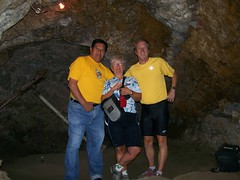
In Valenciana Mine with our guide Carlos
Dolores Hidalgo, San Miguel, Queretaro

San Miguel has the most active interesting plaza. I sat in the plaza and painted well into the night. While drawing I listened to various musical bands serenading the people hanging around the plaza. San Miguel has a large gringo population that has retired to this area and has influenced the culture of the area. As a result there is a huge library with wide selection of books in multiple languages, a very active art community and more old women beggars then any place else.
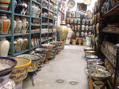
Talavera pottery in Dolores Hidalgo
Queretaro was the last colonial city on ride through the "Bajio" and the most memorable one because of the friends we developed while there. We met two cyclists who cycled from Queretaro to the bottom of South America (where we're going). We spent Friday night talking with Andrei and Dulce about life as a cyclist. On Sunday we all spent the day at the hot springs just on the outskirts of the town of San Miguel. We all returned to the city and met the Belgium couple, Lorenzo and Sarah whom we met at the hot springs. Dulce, Andrei, and their son Emiliano gave us a full walking tour of this great city which has an ancient church at every corner. After the walking tour we enjoyed drinks at the outdoor café on the plaza across from the Government Palace (Palacio De Gobierno) The private tour ended with a night drive up to highest point overlooking the twinkling lights and the ancient 12 kilometer aquaduct that still carries clean water to the city.
As we cycled away from the Queretaro, we reflected on our visit. I felt the place had a heart and soul and a history of caring for the people. Andrei and Dulce with have heart and soul and shared this with us and provided a view of their city which we could not have had otherwise. We'll try to publish their account of their amazing journey.
The Mexican "Ciclonautas" - Dulce, Andrei, and Fernando (Español y Inglés)
(Esta historia es debajo en inglés y español).
In Querétaro we visited with Dulce and Andrei, whom we'd heard about from our Dutch cycle-touring friends Dick and Els. We had a delightful evening and day with them enjoying the area and hearing their stories. They're now temporarily retired from bike touring - and have a delightful 18-month-old named Emiliano and are living the life of a young family. Here is their story, in both English and Spanish.
The Story of the Cyclonauts of Mexico, from Dick and Els' Website. Translation to English in Blue.
La Historia de los Ciclonautas
Supongo que los viajes en bicicleta empieza casi siempre igual, y el de los Ciclonautas no es la excepción, es decir se comienza con planear un recorrido en bicicleta que creemos durará poco tiempo y concluye mucho tiempo después; muchos aún siguen viajando.
I suppose that all bike trips start out about the same, and the Ciclonautas trip is no exception -- that is to say it began with a trip that was supposed to be pretty short, but when the planned time was used up, we still had a long way to go.
En 1996 nos bautizamos como "Ciclonautas" un grupo de amigos (Flor Trejo, Andrei Montero y Fernando Quintero) e iniciamos un viaje en bicicleta por la parte central de México, recorriendo cinco estados de la república (Querétaro, Guanajuato, Jalisco, Colima y Michoacán) en tres meses, esta primera aventura nos animo a planear uno más larga. Durante dos años estuvimos juntando recursos para el viaje y tratando de c onseguir patrocinadores ya que el nuevo recorrido ahora abarcaría América central y del sur.
In 1996 our group of friends (Flor Trejo, Andrei Montero, and Fernando Quintero) christened ourselves as "Cyclonauts" and we began our bike tour in the central part of Mexico, visiting five states (Queretaro, Guanajuato, Jalisco, Colima, and Michoacan) in three months. This first adventure inspired us to plan a much larger one. Over the course of two years we gathered resources for the trip and tried to get sponsors for a new trip to Central and South America.
Los patrocinios nunca los conseguimos por lo tanto debimos hacernos del equipo de viaje con nuestros recursos económicos (ahorros, liquidación en nuestros empleos, y la venta de lo poco que teníamos), para economizar utilizamos nuestras antiguas bicicletas de montaña y fabricamos nuestras alforjas (mochilas de viaje).
The sponsors never came through so we had to make do with the resources we had - our savings, quitting our jobs, and selling what little we had. And we economized by using our old mountain bikes and making some backpacks for the trip.
Los Cilonautas ahora lo conformábamos: Dulce Maria Montiel, Andrei Ortiz y Fernando Quintero. El 31 de mayo de 1998 iniciamos en nuestra Ciudad de Santiago de Querétaro un viaje que supero nuestras expectativas, ya que el recorrido planeado era de viajar s&oacut e;lo un año de nuestra ciudad en México a Buenos Aires, Argentina y retornar en avión. Al primer mes de viaje nos encontramos en Guatemala lo cual significo para nosotros dar nuestro primer paso fuera del país, al inicio contábamos con un plan de viaje que procuramos seguir para cumplir con el tiempo estimado, más los imprevistos nos retraban y al segundo mes ya habíamos lanzado a la basura nuestro itinerario, puesto que nos dimos cuenta que para disfrutar de este viaje no precisábamos de itinerarios.
Now we Cyclonauts were Dulce Maria Moniel, Andrei Ortiz, and Fernando Quintero. On May 31, 1998 we started out from our home town Santiago de Queretaro on a trip that exceeded our expectations and certainly the planned time. We had expected it to take about a year to get from Queretaro, Mexico to Buenos Aires, Argentina, and then we'd return by plane. In the first month of the trip we found ourselves in Guatemala - our first time outside of Mexico - and we started realizing that if we were going to enjoy the trip we weren't going to be able to stick precisely to the schedule.
Nuestra bicicletas en poco tiempo comenzaron a fallar, la cadena, los cambios, las llantas, las parrillas, en fin, el presupuesto se gasto rápidamente y aun no cruzábamos América central. Al llegar a Tegucigalpa, Honduras en una entrevista en la TV el reportero comento que precisábamos de patrocinadores ya que viajábamos casi sin dinero, la respuesta no tardo y al día siguiente una empresa de electrodomésticos "CURACAO" nos llamó para patrocinarnos con 1000 dólares a cambio de hacerle publicidad mientras que viajásemos en el país. Por vez primera creyeron en nuestro viaje y con este patrocinio pudimos continuar tranquilamente por el resto de centro América. A nuestra llegada a San José, Costa Rica nos encontramos con Manuel Quiroz quien tiene una "Casa de Ciclistas" en estos lugares los ciclo viajeros podemos contar con un espacio para descansar, ahí nos dimos cuenta que no éramos los únicos locos que viajaban en bicicleta, ya que estas casas cuentan con un libro de registro y encontramos muchos ciclistas registrados, y direcciones de Casas de Ciclistas en otros países de América del sur.
Our bikes started failing in no time - the chain, the derailleurs, the tires - they were falling apart and we hadn't even gotten through Central America. When we got to Tegucigalpa, Honduras we were doing a TV interview and the reporter commented that we really needed sponsors and we were getting by with almost no money. The answer was swift and the next day the Honduran home appliance maker "Curacao" sponsored us for US $1000 in return for doing publicity for them while we were in the country. For the first time we believed in our trip and with this sponsor we were able to continue calmly through the rest of Central America. When we got to San Jose, Costa Rica, we met with Manuel Quiroz, who has a "House of Cyclists" there where cycletourists can count on a place to rest; there we realized that we weren't the only crazy people who travel on bikes, and on reading the guest book we found lots of cyclists written there, along with directions to "Casas de Ciclistas" or "Houses of Cyclists" in other parts of South America.

| Salida de los Ciclonautas 30 mayo 1998 | Recorrido por la ciudad |

| Santa Ana, El Salvador | Bomberos en Costa Rica |
A Colombia entramos por el Turbo un pequeño puerto junto al Darien (selva que separa a Colombia de Panamá) esta zona es de alto riesgo ya que el constante enfrentamiento entre militares, paramilitares, fuerzas campesinas y FARC (fuerza armada revolucionaria de Colombia) son peligrosos para los turistas, al segundo día de viaje nos encontramos con un grupo armado que después de interrogarnos sobre nuestra procedencia y al enterarse de que éramos mexicanos hicimos buena amistad, su interés sobre los problemas de guerrilla en nuestro país EZLN (Ejercito Zapatista de Liberación Nacional) afianzo nuestra amistad con el grupo armado, nos invitaron a comer intercambiamos monedas mexicanas por insignias de su uniforme, cuando les pedimos tomarles una foto se negaron y nos sugirieron que continuáramos nuestro camino, sin mencionar que habíamos estado con ellos.
We came into Columbia at El Turbo, a tiny port next to Darien - the jungle that separates Columbia from Panama. This is a high-risk area that is constantly under threat by the Army, paramilitary organizations, peasant groups, and the FARC (the primary guerrilla group in Colombia). It's not a very good place for tourists. O the second day we ran into an armed group who after interrogating us about where we'd come from and realizing that we were Mexican became very friendly - they were quite interested in the problems of the EZLN (Zapatista) guerrilla movement in the Chiapas region of Mexico. They invited us to eat, traded Mexican pesos for insignia from their uniforms. When we asked them if we could take a photo, they did turn us down and suggested that we hit the road... and not to mention that we had been hanging around with them.

| En ruta a Colombia - On the way to Colombia | El genio de la chatarra en Colombia |

| Nuevas bicicletas en Medellin, Colombia | Un descanso en el desierto de Sechura, Perù |
Nuestro primer año de viaje lo celebramos en Lima, Perú, nuestros planes de viaje seguían a la deriva ya que aprendimos a vivir día a día y la ruta la planeábamos conforme lo ameritaba la ocación, el objetivo de viaje ahora era llegar a Ushuaia, Argentina, y sabíamos que esto nos llevaría más de un año, pretendíamos conocer lo más que pudiésemos en este trayecto ya que no habría una segunda oportunidad. Nuestros escasos recursos nos obligaron a detenernos el las capitales para trabajar y ahorrar para seguir en viaje. Dulce de profesión estilista llevaba consigo sus herramientas (tijeras, peine, secadora de pelo); Andrei por su parte al ser camarógrafo cargaba con el equipo de fotografía (cámara fotográfica, triple, rollos de pel ícula, flash y cámara de video); Fernando Diseñador Gráfico encargado de los mapas y escribir el diario de ruta. Los trabajos que desempeñamos no solo fueron dentro de nuestras profesiones, ya que los trabajos que más desempeñamos fue en los restaurantes de mexicanos como: cocineros o meseros; cualquier oportunidad de trabajo la tomábamos desempeñándonos en diversos oficios como: pintores de brocha gorda, meseros, dando cursos de manualidades mexicanas, ayudantes en un circo, y artesanos, la artesanía al final fue uno de los trabajos que más desempeñamos ya que no implicaba el mantenernos demasiado tiempo en un solo lugar, en Brasil un artesano nos enseño a fabricar pequeñas bicicletas con una sola pieza de alambre éste tipo de artesanía nos agrado ya que era un buen recuerdo que podíamos dejar a los amigos en el viaje además de ser un buen producto para vender, hoy en día muchos amigos que nos ayudaron comprando una de estas piezas nos escriben diciendo que aun conservan la artesanía que tiene una historia de cómo la adquirieron, y esa historia es la de los Ciclonautas.
We celebrated our first year of the trip in Lima, Peru. Our plans for the trip now became just day-by-day living the route. And the objective was now to get all the way to Ushuia, Argentia; we knew that that would take us more than a year, but we decided to continue on because we knew we might not ever have another chance. Our scarce resources required us to stop and work and save to continue the trip. Dulce, a hair stylist, got her tools (scissors, comb, hair dryer); Andrei the photographer got his equipment together (camera, tripod, folls of film, flash, and video camera); Fernando the graphic designer, was in charge of the maps and writing the trip journal. We also did work outside our professions to get out of debug - cooking and waiting tables at Mexican restaurants, and whatever work opportunity presented itself: we did housepainting, waited tables, gave courses in Mexican etiquette, helped in a circus, and did artesan work. The artesanry was one of the jobs that helped us out the mostanad helped us not to stay in one place for too long. In Brazil an artesan showed us how to make little bicyces with just one piece of wire, and this type of artesanry also helped us with a nice little remembrance that we could leave with our friends on the road as well as being a good product to sell. Stil today we hear from our old friends from the trip who write saying they still keep the little piece because of its history, the history of the Cyclonauts.

| Frente al Cotopaxi en Ecuador | Contraluz en Perù |

| Desierto de Sechura, Perù | Frontera Perú, Bolivia |

| Tomando el sol en el salar de Uyuni, Bolivia |

| Dulce Montiel Arroyo | En la playa de Las Grutas, Argentina | Dulce y las flores argentinas |

| Cafayate, Argentina | Falos en el Valle de Tucumán |

| La Boca, Buenos Aires, Argentina | Frente al Obelisco, en Buenos Aires, Argentina |

| Florianópolis, Brasil | Frente a las Cataratas de Iguazú, Brasil |

| Brasilia, Brasil | Andrei y las bahianas en Salvador, Bahia, Brasil |

| Victoria, Espiritu Santo, Brasil | Una nueva compañera de viaje "La Pancha" en Uruguay | Los tenis de Andrei murieron en el desierto de Perú |
Para finales de 2001 nos encontramos en la ciudad mas austral del mundo Ushuaia, Argentina, habíamos logrado uno de nuestros objetivo que era el de llegar al fin del mundo. Ahí nos encontramos con: Lorenzo Rojo del País Vasco, Jun Miyashita de Japón y Daniel Fernández de Brasil, con estos tres ciclistas celebramos el fin de año y nuevamente cada uno de nosotros retomamos nuestros respetivos caminos, Los Ciclonautas comenzamos el retorno a casa, en abril del 2001 llegaron a la capital Chilena. Dulce y Andrei ya no deseaban continuar el regreso en bicicleta y a través de la embajada mexicana consiguieron un el patrocinio para retornar a México en avión, Fernando por su parte deseaba continuar por un tiempo más el recorrido, De Santiago de Chile dos Ciclonautas dieron por terminado el recorrido.
Fernando por su parte se dirigió a una de las casas de ciclistas más concurridas por los ciclo viajeros, la casa de Eric Savard y su esposa Kelo, 70 Km. Al norte de la capital en los Andes. Esta casa cuenta con una simpática familia que por muchos años se ha dedicado a recibir ciclistas de diversas nacionalidades y cuenta con grande libros de registro donde se puede encontrar miles de historias de ciclo viajeros, dentro de los datos interesantes que se pueden destacar es que desde el 31 de mayo de 1992 hasta el 31 de mayo del 2000 se hospedaron 255 ciclistas de 30 nacionalidades, esta familia ha viajado por todo el mundo sin salir de su casa ya que todo el mundo llega a ella en biccileta.
At the end of 2001 we got to the southernmost city in the world - Ushuaia, Argentina, having accomplished one of our objectives - arriving at the end of the world. There we met with Lorenzo Rojo (a Basque), Jun Miyashita of Japan, and Daniel Fernandez of Brazil. With these three cyclists we celebrated the New Year and then we all went our separate ways. We Cyclonauts began our return home, and in April, 2001, we got to the capital of Chile. Dulce and Andrei no longer wanted to continue the return on bike, and by means of the Mexican Embassy got sponsorship for a return to Mexico by plane. Fernando wanted to continue on for a while longer on his trip. The two Cyclonauts finished their trip in Santiago; Fernando for his part rode on to one of the "Casas de Ciclista" most visited by cycletourists, the house of Eric Savard and his wife Kelo, 70 kilometers north of the capital in the Andes. This house has a very kind family that for many years has dedicated itself to taking in cayclists of various nationalities and has a huge guestbook where you can find thousands of stories of cycle tourists. Among the facts you can find there: Between 31 May 1992 and 31 May 2000, they hosted 255 cyclists from 30 countries. This family has traveled all over the world without leaving the house; the entire world comes to them by bike.
Del pueblo de los Andes a la frontera son 50 Km. de duro ascenso, siendo el más difícil el tramo de "Los Caracoles" 32 curvas muy pronunciadas para llegar a la línea fronteriza, el resto se convierte en bajada del lado Argentino, hasta llegar a Mendoza. El viajar solo fue una nueva aventura al no contar con los compañeros de siempre para pelear, conversar en los caminos solitarios, sobretodo ayudarse y animarse mutuamente el los momentos difíciles, por otra parte fue una buena experiencia para medir los miedos y las dudas.
From that town in the Andes to the border it's 50 kilometers of hard ascent. The stretch of highway is called "Los Caracoles", and has 32 significant curves before you get to the border, followed by a descent on the Argentine side, until you arrive at Mendoza. The trip was a new adventure without the old companions, who always fought or chatted in the lonely highways, helping each other or sympathizing with each other int he hard times.
Los constantes amigos que en el camino se presentaron aislaron la soledad, al cruzar por tercera vez la Argentina por un nuevo rumbo fue pasar de nuevo por casa, Paraguay se convirtió en el reencuentro con la familia Mendoza que adopto a los Ciclonautas como hijos; Brasil por segunda vez recibió a Fernando ahora con mejor pronunciación del portugués y desde el sur del país hasta el norte transcurrieron seis meses. En este tray ecto los inconvenientes no faltaron y la rodilla izquierda Fernando empezó con una pequeña herida que no sanaba, al poco tiempo se desarrollo una bola que segregaba pus con sangre, al mes se asomaba la pequeña cabeza del gusano que salía para respirar, a este bicho que se alimenta de la carne y vive bajo la piel (Berne, o gusano barrenador) se le aplicó métodos tradicionales para sacarlo más no funcionaron, como el colocar un pedazo de tocino para que el gusano al no tener respiración se alojase en el pedazo de carne y removerlo fácilmente, el otro remedio fue el de presionar desde la raíz para botar al gusano, esto sólo hizo que se partiese por mitad y durar mas de tres días con el pie hinchado, en estos casos siempre suele estar alojado más de un gusano el segundo sobrevivió y continuo alimentándose, al final después de un segundo intento por sacarlo nuevamente un fuerte presión y se acabo el problema, una semana después por la herida salio toda la materia muerta mezclada con sangre y pus.
The friends he met on the road increased the solitude, as he crossed the third time through Argentina through a new route to Paraguay. This turned into another visit to the Mendoza family that had adopted the Cyclonauts as children. Brazil for the second time received Fernando - this time with better Portuguese pronunciation and from the south of the country to the north he had taken 6 months. On this path the snags in the road still came along, and Fernando's left knee, with a little wound that didn't get properly cleaned, soon developed into a huge swelling that was oozing pus with blood. By the time a month had passed the little head of a worm stuck its head out to breathe. This little creature was living off the flesh and living under the skin. (Berne, or boreworm). The traditional methods they used to remove the worm didn't work (like putting a piece of bacon on the wound so the worm couldn't breathe and would come out and be easily removed; the other remedy was to push from the root of the swelling to push the worm out - this one only worked partly and ended up with three days of his foot swollen up. In these cases the assumption is that there's more than one work and the second survived and continued eating) Anyway, a week later the blister broke with all the dead matter mixed with blood and pus.
Cruzar la amazona fue una experiencia extraordinaria ya que la inmensidad de la selva impone respeto, y admiración por sobrevivir al constante deteri oro que sufre por las talas de árboles clandestinas. Los sonidos son diferentes a lo acostumbrado empezando por las parvadas de pericos que alborotan la quietud, después de un largo silencio los aullidos de los monos Araguatos en más de una ocasión dejaron con los pelos de punta a Fernando al encontrarse solo en dicho paraje. El viaje de Belem a Manaus de una semana en un barco donde la convivencia con los lugareños hace el viaje más placentero, encontrase un río que en partes es tan angosto y en otras es tan amplio que no se ven sus costas, hacen de esta aventura un deleite difícil de describir.
Crossing the Amazon was an extraordinary experience - the immensity of the forest demands respect and admiration for surviving the constant attack of loggers and clandestine loggers. The sounds are different - the songs of parakeets that break the silence, later a long silence and the scream of a howler monkey that more than once put Fernando's hair on end just to find himself in such a place. The trip from Belem to Manaus was a week in a boat where the convenience of the locals made the trip the more pleasurable. Some places the river was narrow, and others it was quite wide; it was such a delight it's difficult to describe.
Entrando a Venezuela la "Gran Sabana" recibió al ciclista con llanuras inmensas y cascadas que forman pequeños oasis en la planicie, ofrecen excelente espacios para acampar, y hacer nuevas amistades con las comunidades indígenas, como Araimaitepuy donde descanso por una semana debido a la hinchazón del pie derecho por las lluvias constantes e infecciones de piquetes de moscos.
Coming into Venezuela the "Great Savanna" greeted the cyclist with enormous plains and waterfalls that formed little oases in the plain, making excellent places to camp, and there were lots of opportunities to make new friendships with indigenous communities, like Araimaitepuy, where he rested for a week due to the swelling in his right foot from the constant rain, and infections of mosquito bites.
Para mediados de agosto del 2002 ya en Caracas Fernando retorno a México dando por concluido esta aventura por nuestra gran casa llamada América.
In the middle of August of 2002 Fernando got to Caracas and returned to Mexico, giving an end to this adventure in our great house called America.

| Entrada al Parque Nacional Tierra del Fuego | ¡Los Ciclonautas en el fin del mundo! |
Queretaro and the Ciclonautas

In Querétaro we visited with Dulce and Andrei, whom we'd heard about from our Dutch cycle-touring friends Dick and Els. We had a delightful evening and day with them enjoying the area and hearing their stories. They're now temporarily retired from bike touring - and have a delightful 18-month-old named Emiliano and are living the life of a young family. From 1998 to 2001, with nearly no resources, they traveled from Querétaro south through Mexico, Central America, and South America all the way to our destination, Ushuaia. Unlike us, they had scarce resources and had to earn money along the way. Click here to read their whole story in both English and Spanish and see their pictures.
Queretaro was yet another delightful, interesting, old city, with cultural events and music on every corner, and a 500-year-old church on every block. We spent a couple of days taking it in and hearing Andrei and Dulce's stories. And Andrei took us (along with new Belgian friends Lorenzo and Sarah) on a tour of the city.
Teotihuacan, Toltecs, and Aztecs

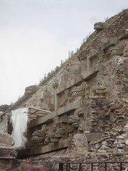
Temple of Quezlcoatl at Teotihuacan
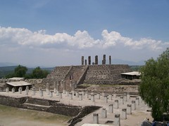
Tula Pyramid with Atlantes
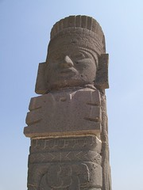
Atlantes Closeup - Tula
The Templo Mayor has the least remaining structures of the three, but is tremendously interesting. The Aztecs (or Mexica) arrived at the current site of the very center of Mexico City in 1325 after multi-century pilgrimmage in which they were looking for their place, the center of the universe. They found it one day when the prophesied "eagle sitting on a cactus eating a snake" was sighted. They stopped right there and built one of the most extensive empires of the pre-Hispanic Americas. Their temple, the Templo Mayor, was an imposing pyramid that stood over the city and the lake that is now the rest of Mexico City.
When Cortes and the Spanish Conquistadores arrived, they ordered all the religious sites and most of the religious objects and writings destroyed. The Templo Mayor was razed, and the Spanish built their cathedral and headquarters on top of it. What they didn't know was that there were two centuries of smaller pyramids underneath it, as the Aztecs had continually enlarged the pyramid. So in 1979 when some street maintenance workers found a huge Aztec relic, the decision was made to excavate the entire site, even though it meant tearing up a piece of the very center of Mexico's downtown.
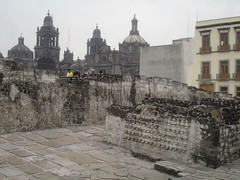
Mexico City Cathedral the Templo Mayor
The archeologists found a whole series of pyramids-within-pyramids, where the Aztecs had enlarged by adding on new layers. And inside it all were hundreds and hundreds of offerings, including human remains and trade goods from all over the Meso-American world, and even antiques from ancient Teotihuacan.
The offerings, of course, are hard to talk about. Apparently most of the Meso-American cultures, including Teotihuacan, the Toltecs, and the Mayas, did human sacrifices. But the Aztecs were completely psychotic about it, if I can say that without hurting anybody's feelings.
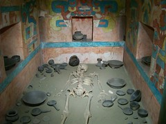
Templo Mayor Offering
Mexico City: Culture, Tacos, Demonstrations

We spent a week visiting incredible Mexico City, probably the world's largest city with close to 20 million inhabitants. Despite the warnings of everyone (as is common for any large city) we didn't have any trouble. No trouble in the streets, no trouble in the subway, no trouble on the buses. We felt comfortable walking and using the subway returning home the last night even though it was after 11pm.
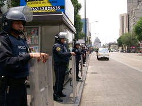
Riot-ready Mexican Police
Mexico City has an enormous number of attractions, more than you could ever come to terms with. There's the Cathedral, of course, which was built on top of the ruins of the ancient Aztec pyramid, the "Templo Mayor", which is excavated and is described elsewhere.
The Museum of Anthropology is one of the best of its kind in the world. We spent a full day there - and were surprised at our endurance. Usually we don't have that much attention span. It has exhibits of the past (Aztecs/Mexica, Toltecs, Teotihuacan, Maya, Oaxaca, and on and on). And it has exhibits about the current indigenous peoples. We tried to visit most, but didn't quite make it. You could spend all day every day for a month there and still not really have much of a grasp on the museum. However, it was pretty well done for the English speaker, with many interpretive signs in English.
We got tickets for the world-famous Ballet Folklorico de Mexico (it cost more than we'd usually spend for hotels for 4-5 days). It was great, inspiring, wonderful. For me it still doesn't affect my memories like the dancers we happened upon in Zacatecas at the Cultural Week there.
Yes, Mexico City is full of people and cars. And Nancy was quite uncomfortable with the smog the first day or so, although she seems to have adjusted. But it was amazing how safe it felt, and how reasonable things were. We didn't pay more for hotels than we're accustomed to (about $20-$30/night), and the food on the streets was priced well. The best bargain in town is the Metro (subway), for about US $0.18/ride, if you can imagine that. It's clean (no graffiti), safe, fast. It can sometimes be pretty crowded, like most major metro systems. But it's a pretty impressive system, covering much of the city with efficient service.
Riding Between the Volcanoes

Popo (actually Popocatepetl) and Ixta (Iztaccíhuatl) are two of the three highest mountains in Mexico, at over 17,800 feet (5,400) meters, and the saddle between them is called the Paso de Cortes, and it's at 12,000 feet (3650 meters). Cortes came over this pass from Cholula (where we are tonight) to attack the Aztecs at Tenochtitlan (today's Mexico City). It's a direct route over the rim of the Valley of Mexico, but the 4,000 foot climb around a smoking volcano was a little threatening to us!
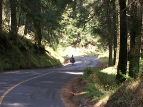
Nancy climbing to the Paso de Cortes